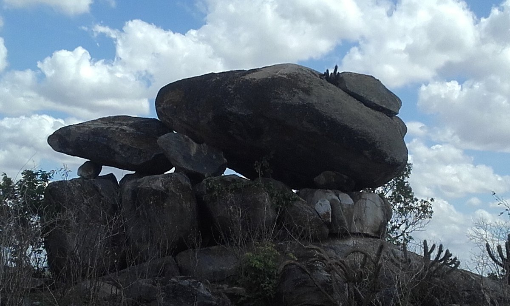

Informações técnicas sobre relevo, população, IDH etc.
| INFORMAÇÕES | |
|---|---|
| Municípios limítrofes | Quixerombim, Milhã, Dep. Irapuan Pinheiro, Piquet Carneiro, Mombaça, e Pedra Branca |
| Fundação | 3 de setembro de 1896 (124 anos) |
| Área total | 1 002,127 km² |
| Clima | Tropical semi-árido |
| IDH | 0,618 — médio |
| PIB | R$ 108 182,959 mil |
| INFORMAÇÕES TERRITORIAIS | |
|---|---|
| Número de habitantes | 25 496 habitantes |
| Superfície de Senador Pompeu |
95 612 hectares
956,12 km² (369,16 sq mi) |
| Densidade populacional | 26,7 ha./km² |
| Altitude de Senador Pompeu | 183 metros de altitude |
| Coordenadas geográficas decimais |
Latitude:
-5.58873
Longitude: -39.3713 |
| Coordenadas geográficas sexagesimais | Latitude: 5° 35' 19'' Sul , Longitude: 39° 22' 17'' Oeste |
| INFORMAÇÕES DO MUNICÍPIO | |
|---|---|
| Endereço da Prefeitura Municipal de Senador Pompeu |
Senador Pompeu
Prefeitura de Senador Pompeu
Av. Francisco França Cambraia SENADOR POMPEU - CE, 63600-000 Brasil Work +55 88 3449-1310 Fax +55 88 3449-1302 |
| Telefone da prefeitura |
(88) 3449-1310
Internacional: +55 88 3449-1310 |
| Fax |
(88) 3449-1302
Internacional: +55 88 3449-1302 |
| Endereço eletrônico da prefeitura |
rntjunio@bol.com.br
|
| Site oficial do município | senadorpompeu.ce.gov.br |
| INFORMAÇÕES DO ADMINISTRATIVAS | ||
|---|---|---|
| Prefeito de Senador Pompeu | ANTÔNIO MAURÍCIO PINHEIRO JUCÁ | |
| Partido politico | PDT | |
| INFORMAÇÕES DE TRANSPORTE | |
|---|---|
| Transporte urbano disponível | - |
| Aeroporto |
Aeroporto Regional do Cariri
Aeroporto Internacional Pinto Martins
222.2 km
Aeroporto Dix-Sept Rosado
226.6 km
|
| INFORMAÇÕES DE DISTÂNCIA A OUTRAS CIDADES | ||
|---|---|---|
| São Paulo : 2146 km | Rio de Janeiro : 1971 km | Brasília : 1470 km |
| Salvador : 827 km | Belo Horizonte : 1660 km | Manaus : 2309 km |
| Curitiba : 2448 km | Fortaleza : 248 km mais perto | Goiânia : 1639 km |
| Belém : 1114 km | Porto Alegre : 2991 km | Guarulhos : 2124 km |
| Campinas : 2097 km | São Luís : 654 km | São Gonçalo : 2.356 km |
| Distância calculada em linha reta! | ||
Conheça mais sobre a história de Senador Pompeu.
Previamente conhecida como Humaitá, Senador Pompeu emancipou-se politicamente pela lei estadual nº 332 de 3 de setembro de 1896, com território desmembrado de Maria Pereira, atual Mombaça, e recebeu status de município em 1901.
De acordo com Oliveira (2015), a cidade de Senador Pompeu foi palco de diversos conflitos relacionados às práticas coronelistas locais. Tanto a nível político, como a nível cotidiano estas práticas acabam por fortalecer os laços de dependência e controle das camadas mais pobres da cidade, que via de regra, era participante da agricultura ou então trabalhavam no cultivo e beneficiamento do algodão.
Devido ao crescimento econômico possibilitado pelo ciclo do algodão, a cidade inicia um processo próspero, o que ocasionou o fortalecimento do comércio até o final do ciclo algodoeiro no final da década de 60. Após isso, a cidade deixa de ter uma importância na economia do Estado e passa a sofrer um processo de declínio.
Devido à infraestrutura ferroviária e localização central, Senador Pompeu foi uma das cidades cearenses na qual foi instalado um dos Campos de Concentração no Ceará (ou mais conhecidos como os currais do governo) durante a seca de 1932. Nesses espaços, aprisionaram-se milhares de trabalhadores para que eles não chegassem a Fortaleza, capital do Estado. A cidade teve o segundo maior campo de concentração.
Saiba mais sobre os melhores lugares e o que fazer em Senador Pompeu.
Uma das maiores e mais belas pontes ferroviárias do brasil e uma das mais abandonadas: A ponte metálica sobre o Rio Banabuiú, no Município de Senador Pompeu - Ceará - Brasil. localiza-se, no km 287 da linha férrea que liga Fortaleza ao Crato. A rede ferroviária chegou a Senador Pompeu em 02/07/1900. A Ponte é de 1906, ainda da antiga Estrada de Ferro de Baturité. É composta por seis vãos, com estrutura de treliça metálica, em que se intercalam retas e curvas formando arcos, com um comprimento total de 193 metros e vinte e cinco centímetros. Pesa centenas de toneladas. Não há soldas. Montada com estruturas de treliças rebitada e parafusada. Tem altura de cinco metros e sessenta centímetros e largura de 05 metros. Sustentada por sapatas com alvenaria de pedra, assentadas no leito do Rio. Como se situa bem no meio da linha férrea entre a Capital do Ceará e o Cariri. Na fronteira com Pernambuco, cuja extensão totaliza 550 km, é uma das mais belas pontes, a ponto de seu interior dar uma ideia de infinito, graças a uma ilusão de ótica, em virtude da perfeita combinação de retas e curvas.
Fruto da ciência e da arte - Beleza patrimônio histórico a ser preservado: A ponte possibilitou à ferrovia, no começo do Século XX, ultrapassar o sertão central em sentido do centro sul e depois o cariri cearense. Permitindo a exportação de algodão de todo o interior do Ceará a partir dos portos cearenses e a distribuição de gêneros alimentícios para todo o comércio do interior cearense. Portanto fundamental para economia, que ao ser potencializada, alterou toda a realidade social, política e cultural. Por isso de profundo interesse cultural e patrimônio histórico que não pode ser abandonado nem se permitir que se reduza a destroços. Patrimônio material e cultural a ser preservado. Porém abandonado pela prefeitura do Município, pelo governo do Estado do Ceará e pelo Governo Federal. Vez que a política cultural de preservação da memória é muito sofrível e raquítica no Brasil. A sociedade civil terá que se mobilizar e se for o caso acionar até mesmo o Ministério Público para preservação dessa maravilha arquitetônica em pleno Sertão Central do Ceará.
No dia 22 de setembro de 2012 foi descoberto, pelo pesquisador Valdecy Alves, na localidade de Pedras Grandes próximo a Serra do Patu, um sítio pré-histórico com um monumento megalítico mais conhecido como Dólmen, no Brasil só existiam até o momento dois monumentos do período neolítico um em Paramirim, Bahia e outro em Anicuns, Goiás.
A formação rochosa denominada "dólmen" ou pedras montadas, localiza-se no Sítio Serrote, propriedade particular do sr. Valdir fica a cerca de 1 km da entrada da cidade de Senador Pompeu no Ceará. Trata-se de um dos 3 dólmens conhecidos existentes no Brasil (os demais localizam-se em Paramirim na Bahia e em Anicuns (Goiás). Esta belíssima formação se destaca pelo paralelismo das gigantes pedras de sua base, assim como pela localização da pedra menor que serve de apoio para uma pedra gigante, tudo harmonicamente misterioso
Veja como chegar nos melhores pontos de Senador Pompeu.